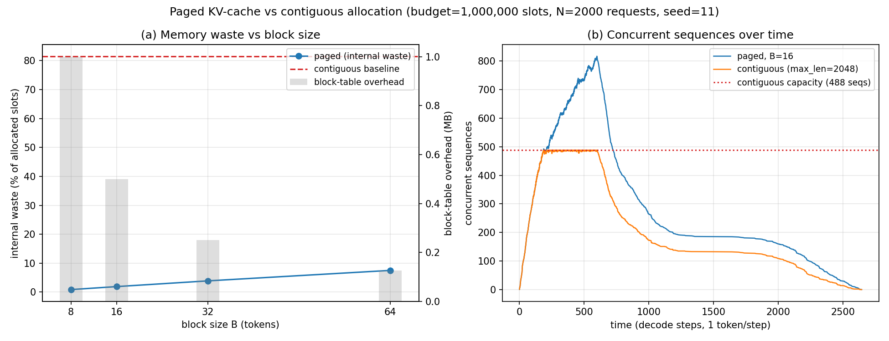

vLLM-style paged block manager: quantifying fragmentation waste vs contiguous allocation
During autoregressive decoding, each sequence's KV cache grows token by token, but its final length is unknown at admission. A serving system must reserve GPU memory per sequence without knowing how much each will need.
The naive approach reserves the worst case (max_len = 2048 slots) as one contiguous run per sequence, placed with first-fit. Two costs follow:
src/llm_inference_engine/paged_kv/ implements:
blocks.py — BlockManager: the pool is split into fixed-size blocks (B tokens each); a sequence of n tokens takes ceil(n / B) blocks from a free list, recorded in a per-sequence block table. Blocks are fungible, so any free block serves any sequence. Plus ContiguousAllocator: the naive baseline, reserving max_len contiguous slots per sequence with first-fit placement and interval coalescing on free. Both expose identical accounting (used_slots, allocated_slots, total_slots, fragmentation).workload.py — gen_workload: 2000 requests; lengths from a 70/20/10 mixture of N(128,32) / N(512,128) / N(2048,256), clipped to [1, 2048] (measured mean 373 tokens); arrivals uniform over 600 time steps; each sequence completes length steps after arrival.experiments/run_experiments.py — event-driven arrival/departure simulation through both allocators (seed np.random.default_rng(11)), the B sweep, charts, and results/results.md. The pipeline runs twice and asserts identical headline numbers before writing anything.| Allocator | Waste | Max concurrent | Rejected / 2000 |
|---|---|---|---|
| Paged B=16 | 1.90% | 817 | 0 |
| Contiguous (max_len reserve) | 81.51% | 488 | 603 |
| Block size | 8 | 16 | 32 | 64 |
|---|---|---|---|---|
| Paged waste | 0.87% | 1.90% | 3.88% | 7.50% |
1M-slot budget, 2000 requests, mean length 373 tokens (seed 11, ran twice identical). Paging converts a capacity problem into a rounding problem: waste is bounded by B−1 slots per sequence.

experiments/run_experiments.py — re-running reproduces these exactly.src/llm_inference_engine/paged_kv/
blocks.py # BlockManager (paged) + ContiguousAllocator (baseline)
workload.py # mixed sequence-length request stream
02-paged-kv/
experiments/run_experiments.py # 2000-request sim + block-size sweep
results/ # results.md + charts.png (generated)
Full source, tests, and experiment code: 02-paged-kv/ ·
Run: cd 02-paged-kv && python3 experiments/run_experiments.py